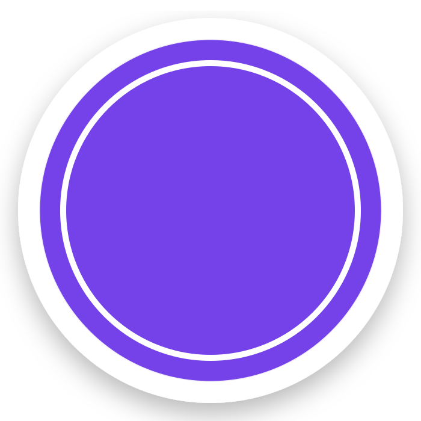

01
AI · PYTHON · FASTAPI · DOCKER
RRAGHUVIR
Personal AI assistant exploring automation, browser control, multi-device workflows and permission-aware actions.
VIEW PROJECT →I build intelligent, scalable and
impactful digital solutions.

✦✦Hey, glad you made it here 👋
I'm Asmit Mishra — a self-taught developer who enjoys turning ideas into working products. I learn by building, breaking, fixing and experimenting.
I work across frontend, backend and AI, with a strong interest in automation, intelligent products and clean user experiences.
Real projects. Real experiments.
Always something new to learn.
Personal AI assistant exploring automation, browser control, multi-device workflows and permission-aware actions.
VIEW PROJECT →A modern music experience built around a simple no-subscription concept.
VIEW PROJECT →A product-focused web project in my growing collection of real-world builds.
VIEW PROJECT →HTML · CSS · JavaScript
Python · FastAPI · Node.js
AI/ML · RAG · Automation
Git · GitHub · Docker
Have an idea, project or collaboration in mind?